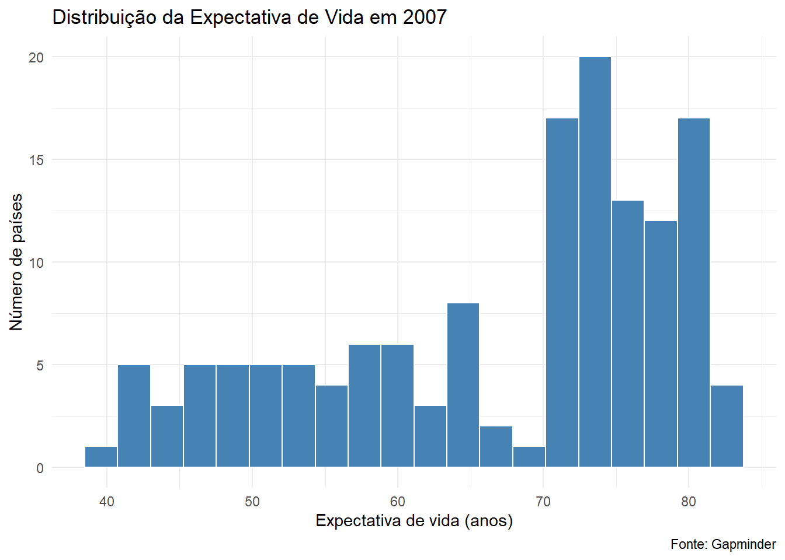
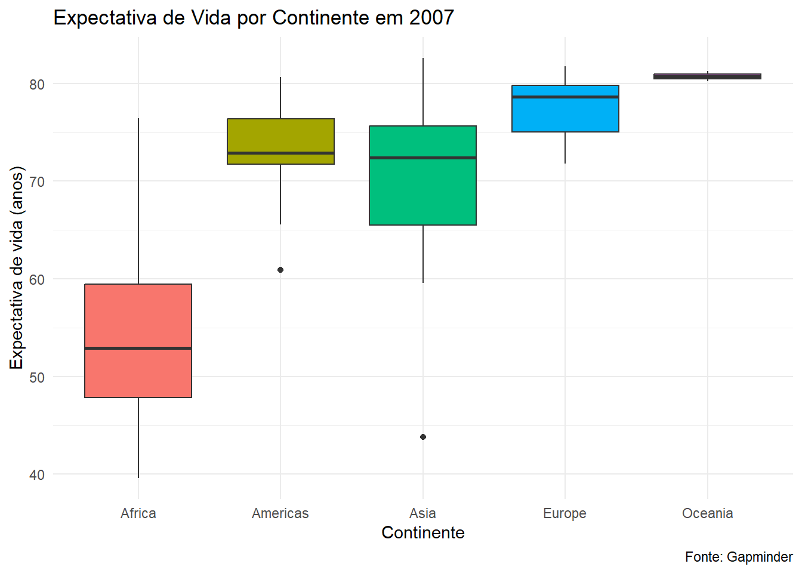
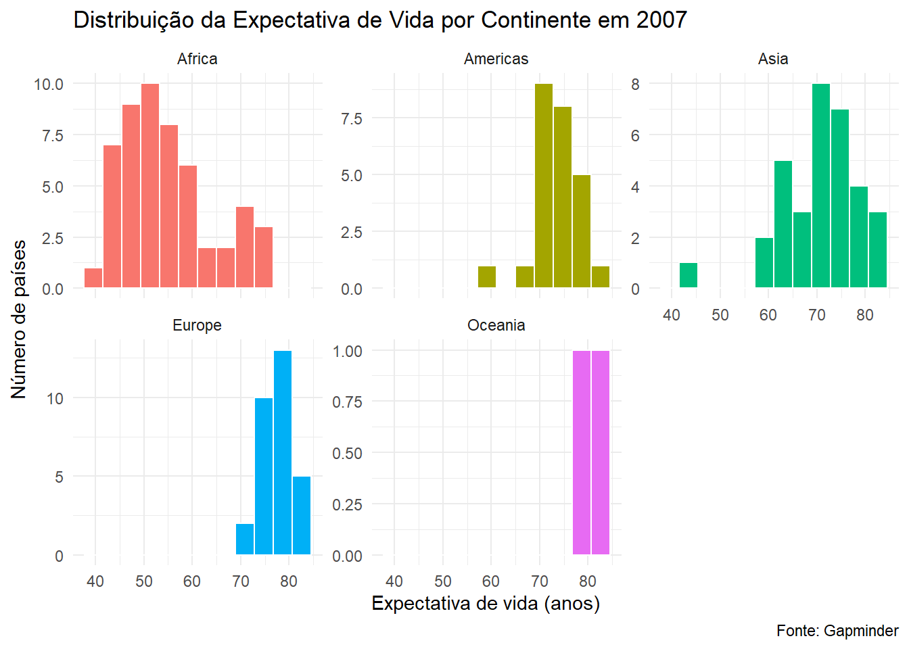

library(ggplot2) # visualização de dados
library(dplyr) # manipulação de dados (já vimos na aula 1!)
library(gapminder) # base de dados
# Carregando os dados (igual à aula passada!)
dados = gapminder::gapminder02_codigo_aula2
Aula 2 — Visualização de Dados com ggplot2
Este material foi desenvolvido pelo Prof. Daniel Pagotto para a disciplina de Análise e Comunicação de Dados.
Na aula passada aprendemos a manipular dados com o dplyr: selecionar colunas, filtrar linhas, agrupar e resumir. Agora vamos dar um passo importante: transformar esses dados em gráficos.
Afinal, de nada adianta calcular a média de PIB per capita de cada continente se não conseguimos comunicar isso de forma clara. É aí que entra a visualização de dados.
A ferramenta que vamos usar é o pacote ggplot2.
1. A lógica do ggplot2 — A Gramática dos Gráficos
Antes de codar, precisamos entender como o ggplot2 pensa.
O ggplot2 é baseado em um conceito chamado Gramática dos Gráficos (Grammar of Graphics). A ideia é que todo gráfico pode ser descrito como uma combinação de camadas:
| Camada | O que faz | Exemplo |
|---|---|---|
ggplot() |
Define os dados e os eixos | Qual dataset? Qual coluna no eixo X? No Y? |
geom_*() |
Define o tipo de gráfico | geom_line(), geom_bar(), geom_histogram() |
aes() |
Mapeia variáveis a propriedades visuais | Cor, tamanho, preenchimento |
labs() |
Títulos e rótulos dos eixos | Título, subtítulo, fonte |
theme_*() |
Estilo visual do gráfico | Fundo, grade, fonte |
Pense assim: você vai empilhando camadas no gráfico usando o operador +. Como se fosse uma receita — você vai adicionando ingredientes.
ggplot(dados, aes(x = ano, y = pib)) + # camada base
geom_line() + # tipo de gráfico
labs(title = "PIB ao longo do tempo") + # rótulos
theme_minimal() # estiloAgora vamos ver isso na prática!
2. Preparando o ambiente
Antes de tudo, vamos carregar os pacotes que vamos usar. Lembra que na aula passada instalamos todos eles? Se ainda não instalou, rode install.packages("nome_do_pacote") no Console.
Deu certo? Ótimo. Vamos em frente.
3. Gráfico de Linha — Evolução do PIB per capita
Nosso primeiro gráfico vai mostrar como o PIB per capita do Brasil e do Chile evoluiu ao longo do tempo.
Primeiro, usando o dplyr (que você já conhece!), vamos filtrar apenas os dois países:
# Filtrando Brasil e Chile (relembrando o filter() da aula 1!)
brasil_chile = dados |>
filter(country %in% c("Brazil", "Chile"))O operador
%in%é muito útil! Ele verifica se um valor está dentro de uma lista. É como perguntar: “o país está dentro de {Brasil, Chile}?”
Agora vamos construir o gráfico em camadas:
brasil_chile |>
ggplot(aes(x = year, y = gdpPercap, color = country)) +
geom_line(linewidth = 1.2) +
geom_point(size = 2.5) +
labs(
title = "Evolução do PIB per capita",
subtitle = "Brasil e Chile | 1952–2007",
x = "Ano",
y = "PIB per capita (US$)",
color = "País",
caption = "Fonte: Gapminder"
) +
theme_minimal()
O que estamos fazendo aqui?
aes(x = year, y = gdpPercap, color = country): o eixo X é o ano, o eixo Y é o PIB per capita, e a cor de cada linha representa o país;geom_line(): desenha as linhas;geom_point(): adiciona os pontinhos em cada observação;labs(): define os títulos e rótulos;theme_minimal(): aplica um estilo limpo e elegante.
O que você observa neste gráfico? O Chile apresenta uma trajetória de crescimento mais acelerada do que o Brasil, especialmente a partir dos anos 1990?
Exercício 1: Faça o mesmo gráfico, mas desta vez inclua também a Argentina e a Colômbia. O que muda na interpretação?
4. Histograma — Distribuição da expectativa de vida
Um histograma mostra como os dados estão distribuídos. Vamos ver a distribuição da expectativa de vida dos países no ano de 2007.
dados_2007 = dados |> filter(year == 2007)
dados_2007 |>
ggplot(aes(x = lifeExp)) +
geom_histogram(bins = 20, fill = "steelblue", color = "white") +
labs(
title = "Distribuição da Expectativa de Vida em 2007",
x = "Expectativa de vida (anos)",
y = "Número de países",
caption = "Fonte: Gapminder"
) +
theme_minimal()
O parâmetro
binsdefine quantas barras o histograma vai ter. Teste mudar esse valor — usebins = 10e depoisbins = 30— e observe como o gráfico muda.
O parâmetro fill define a cor de preenchimento das barras, e color define a cor da borda. Experimente trocar as cores!
Exercício 2: Faça um histograma para o ano de 1952 e compare visualmente com o de 2007. A distribuição ficou mais espalhada ou mais concentrada? O que isso indica?
5. Boxplot — Comparando a distribuição por continente
O boxplot é excelente para comparar a distribuição de uma variável entre grupos. Lembra que na aula anterior discutimos mediana, quartis e desvio-padrão? O boxplot mostra tudo isso visualmente!
dados_2007 |>
ggplot(aes(x = continent, y = lifeExp, fill = continent)) +
geom_boxplot() +
labs(
title = "Expectativa de Vida por Continente em 2007",
x = "Continente",
y = "Expectativa de vida (anos)",
fill = "Continente",
caption = "Fonte: Gapminder"
) +
theme_minimal() +
theme(legend.position = "none") # tira a legenda (já está no eixo X)
Lendo o boxplot:
- A linha do meio da caixa é a mediana (2º quartil);
- A parte inferior da caixa é o 1º quartil (25%);
- A parte superior da caixa é o 3º quartil (75%);
- Os pontos fora dos bigodes são outliers — países com valores atípicos.
Os parâmetros
fillecolormapeiam variáveis a propriedades visuais.fillpreenche o interior da forma.colordefine a borda. Quando colocados dentro doaes(), eles são associados a uma variável dos dados. Quando colocados fora (como fizemos no histograma), são cores fixas.
Exercício 3: Repita o boxplot, mas agora para o PIB per capita (gdpPercap). Qual continente apresenta maior variação interna?
6. Histograma com facet_wrap() — Um painel por continente
Às vezes queremos comparar a distribuição de uma variável entre vários grupos ao mesmo tempo. O facet_wrap() divide o gráfico em painéis, um para cada grupo. É muito poderoso!
dados_2007 |>
ggplot(aes(x = lifeExp, fill = continent)) +
geom_histogram(bins = 12, color = "white") +
facet_wrap(~continent, scales = "free_y") +
labs(
title = "Distribuição da Expectativa de Vida por Continente em 2007",
x = "Expectativa de vida (anos)",
y = "Número de países",
fill = "Continente",
caption = "Fonte: Gapminder"
) +
theme_minimal() +
theme(legend.position = "none")
O argumento
scales = "free_y"permite que cada painel tenha sua própria escala no eixo Y. Isso é útil quando os continentes têm números de países bem diferentes (a África tem muito mais países do que a Oceania, por exemplo). Teste remover este argumento e veja o que acontece.
Exercício 4: Use facet_wrap(~continent) para fazer um gráfico de linha da evolução da expectativa de vida ao longo do tempo, com um painel por continente. Dica: use todos os dados (dados), não apenas dados_2007.
7. Gráfico de Barras — PIB per capita médio por continente
Vamos combinar o dplyr com o ggplot2 para criar um gráfico de barras. Primeiro calculamos a média com summarise(), e depois plotamos.
dados |>
filter(year == 2007) |>
group_by(continent) |>
summarise(media_pib = mean(gdpPercap)) |>
ggplot(aes(x = continent, y = media_pib, fill = continent)) +
geom_col() +
labs(
title = "PIB per capita médio por Continente em 2007",
x = "Continente",
y = "PIB per capita médio (US$)",
fill = "Continente",
caption = "Fonte: Gapminder"
) +
theme_minimal() +
theme(legend.position = "none")
geom_col()vsgeom_bar(): Ogeom_col()usa uma coluna do seu dataframe como altura das barras. Ogeom_bar()conta automaticamente quantas linhas existem por grupo. Para gráficos de barras com valores já calculados, use sempregeom_col().
Exercício 5: Faça o mesmo gráfico, mas desta vez compare os anos de 1952 e 2007 lado a lado. Use filter(year == 1952 | year == 2007), agrupe por continent e year, e adicione fill = factor(year) no aes(). O que mudou?
8. Gráfico de Barras Horizontal — População por continente
Às vezes os rótulos do eixo X ficam sobrepostos ou difíceis de ler. Uma boa solução é virar o gráfico usando coord_flip().
Vamos ver a população total por continente em 2007:
dados |>
filter(year == 2007) |>
group_by(continent) |>
summarise(pop_total = sum(pop)) |>
arrange(pop_total) |>
mutate(continent = factor(continent, levels = continent)) |> # mantém a ordem do arrange
ggplot(aes(x = continent, y = pop_total / 1e9, fill = continent)) +
geom_col() +
coord_flip() +
labs(
title = "População Total por Continente em 2007",
x = NULL,
y = "População (bilhões)",
fill = "Continente",
caption = "Fonte: Gapminder"
) +
theme_minimal() +
theme(legend.position = "none")
Observações importantes:
sum(pop)soma a população de todos os países do continente;pop / 1e9converte o número para bilhões (fica mais legível do que 1.000.000.000);arrange()+mutate(continent = factor(...))garante que as barras fiquem ordenadas de menor para maior;coord_flip()vira os eixos — o que era X vira Y e vice-versa;x = NULLremove o rótulo do eixo X (que ficou vazio após o flip).
Exercício 6: Faça o mesmo gráfico, mas desta vez mostrando os 10 países mais populosos em 2007. Use slice_max(pop, n = 10) após o filter().
9. Gráfico de Pizza — Participação da população por continente
O gráfico de pizza (pie chart) mostra a participação proporcional de cada categoria no total. No ggplot2, ele é construído a partir de um gráfico de barras + coord_polar().
dados |>
filter(year == 2007) |>
group_by(continent) |>
summarise(pop_total = sum(pop)) |>
mutate(proporcao = pop_total / sum(pop_total),
rotulo = paste0(continent, "\n", round(proporcao * 100, 1), "%")) |>
ggplot(aes(x = "", y = pop_total, fill = continent)) +
geom_col(width = 1, color = "white") +
coord_polar(theta = "y") +
labs(
title = "Participação na População Mundial por Continente em 2007",
fill = "Continente",
caption = "Fonte: Gapminder"
) +
theme_void() # tema sem eixos — ideal para pizza
Uma nota honesta sobre gráficos de pizza: Eles são visualmente intuitivos, mas tendem a ser menos precisos do que barras quando as fatias são parecidas em tamanho. Use-os quando há uma fatia claramente dominante (como a Ásia neste caso) ou quando você quer enfatizar a composição do todo.
10. Dispersão — Relação entre PIB per capita e Expectativa de vida
O gráfico de dispersão (scatter plot) é ideal para explorar a relação entre duas variáveis numéricas. Lembra que na aula 1 calculamos a correlação entre expectativa de vida e PIB per capita? Agora vamos visualizar!
dados_2007 |>
ggplot(aes(x = gdpPercap, y = lifeExp,
color = continent, size = pop)) +
geom_point(alpha = 0.7) +
scale_x_log10() +
labs(
title = "PIB per capita vs. Expectativa de Vida em 2007",
x = "PIB per capita (escala log, US$)",
y = "Expectativa de vida (anos)",
color = "Continente",
size = "População",
caption = "Fonte: Gapminder"
) +
theme_minimal()
Muito está acontecendo aqui!
color = continent: cada continente ganha uma cor;size = pop: o tamanho de cada ponto representa a população do país;alpha = 0.7: transparência dos pontos — evita que pontos sobrepostos se “percam”;scale_x_log10(): transforma o eixo X em escala logarítmica. Por quê? Porque o PIB per capita tem uma distribuição muito assimétrica — alguns países são muito ricos e esticariam o gráfico. A escala log comprime essa assimetria e revela melhor a relação.
Este gráfico é inspirado nos famosos gráficos de bolhas do Hans Rosling, fundador do instituto Gapminder!
Exercício 7: Repita o gráfico de dispersão para o ano de 1952. A relação entre PIB e expectativa de vida parece mais ou menos forte do que em 2007?
11. Adicionando uma linha de tendência
Podemos adicionar uma linha de tendência ao gráfico de dispersão com geom_smooth(). Ela ajuda a identificar visualmente a direção da relação entre as variáveis.
dados_2007 |>
ggplot(aes(x = gdpPercap, y = lifeExp)) +
geom_point(aes(color = continent, size = pop), alpha = 0.7) +
geom_smooth(method = "lm", se = TRUE, color = "black", linewidth = 0.8) +
scale_x_log10() +
labs(
title = "PIB per capita vs. Expectativa de Vida em 2007",
subtitle = "Com linha de tendência (regressão linear)",
x = "PIB per capita (escala log, US$)",
y = "Expectativa de vida (anos)",
color = "Continente",
size = "População",
caption = "Fonte: Gapminder"
) +
theme_minimal()`geom_smooth()` using formula = 'y ~ x'
method = "lm"significa linear model, ou seja, uma reta de regressão. O argumentose = TRUEmostra a faixa de incerteza ao redor da linha. Você pode usarmethod = "loess"para uma curva mais flexível que se adapta aos dados.
12. Evolução temporal de múltiplos países — geom_line() com destaque
Vamos ver a evolução da expectativa de vida em todos os países da América do Sul, destacando o Brasil.
america_sul = c("Brazil", "Argentina", "Chile", "Colombia",
"Peru", "Venezuela", "Bolivia", "Ecuador",
"Paraguay", "Uruguay")
dados |>
filter(country %in% america_sul) |>
mutate(destaque = if_else(country == "Brazil", "Brasil", "Outros")) |>
ggplot(aes(x = year, y = lifeExp,
group = country,
color = destaque,
linewidth = destaque)) +
geom_line(alpha = 0.8) +
scale_color_manual(values = c("Brasil" = "#009C3B", "Outros" = "grey70")) +
scale_linewidth_manual(values = c("Brasil" = 1.5, "Outros" = 0.7)) +
labs(
title = "Evolução da Expectativa de Vida — América do Sul",
subtitle = "Brasil em destaque",
x = "Ano",
y = "Expectativa de vida (anos)",
color = NULL,
linewidth = NULL,
caption = "Fonte: Gapminder"
) +
theme_minimal()
Técnicas novas aqui:
group = countrygarante que cada linha corresponda a um país;scale_color_manual()permite definir cores específicas para cada categoria manualmente;scale_linewidth_manual()controla a espessura de cada linha;mutate(destaque = if_else(...))é odplyrtrabalhando junto com oggplot2— criamos uma variável auxiliar para separar o Brasil dos demais países.
13. Lista final
Use o dataset dados (gapminder) para resolver os exercícios abaixo.
a) Filtre os dados para o ano de 2007 e faça um gráfico de barras horizontal mostrando os 10 países com maior expectativa de vida. Ordene as barras da maior para a menor.
b) Crie um gráfico de linha mostrando a evolução da população total por continente ao longo do tempo. Dica: use group_by(continent, year) e summarise(pop_total = sum(pop)) antes de plotar.
c) Faça um boxplot comparando a distribuição do PIB per capita entre os continentes em 1952 e em 2007. Use facet_wrap(~year) para colocar os dois anos lado a lado.
d) Escolha três países de continentes diferentes e faça um gráfico de linha comparando a evolução da expectativa de vida deles ao longo do tempo. Adicione geom_point() e personalize as cores com scale_color_manual().
e) Desafio: Calcule, para cada continente e cada ano disponível, a média ponderada da expectativa de vida pela população (ou seja, países mais populosos têm mais peso na média). A fórmula é sum(lifeExp * pop) / sum(pop). Plote a evolução dessa média ponderada por continente usando geom_line().